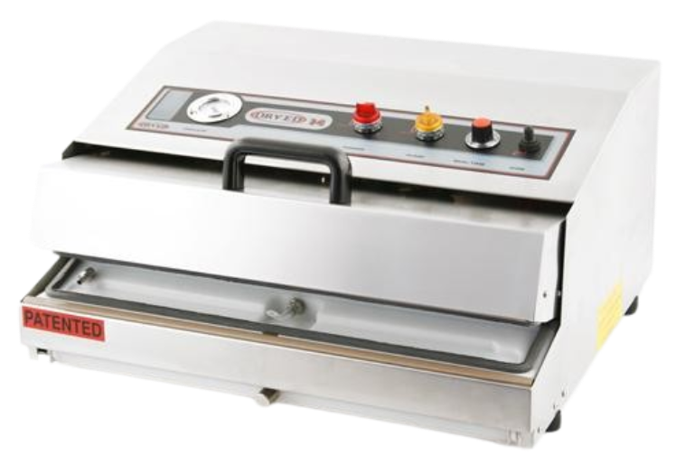
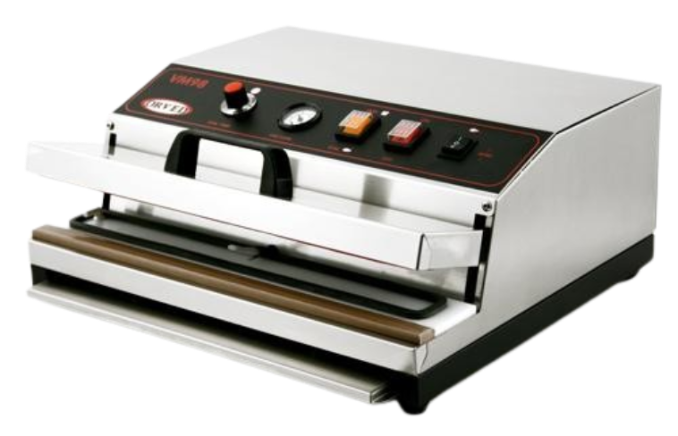
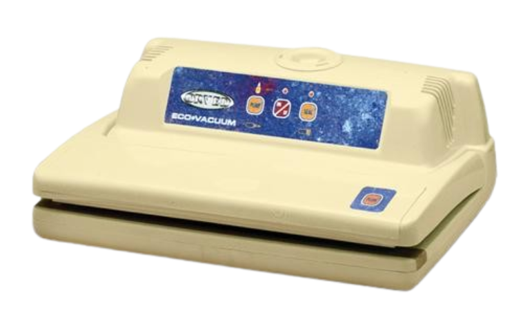

Kambrita vaakumpakendajad
Garantii tippklassist Henkelman masinatele 3 aastat!
Hinnad ei sisalda käibemaksu.
ORVED VM 14/90

VM 14/90 on spetsiaalne vaakumpakendaja standardsete vaakumkottide pakendamiseks.
Masinal on spetsiaalne spiraal, mis avab koti vakumeerimise ajaks.
Kogu töötsükkel on mikroprotsessori poolt kontrollitud.
Masin on valmistatud roostevabast terasest.
Kasutatud on võimast tööstuslikku vaakumpumpa, mis tekitab vaakumi mõne sekundiga.
Vedelike pumpa sattumise vältimiseks on masin varustatud filtriga.
Masin on sobilik kuivade toodete pakendamiseks keskmistes ja suurtes kogustes.
Rohkem infot: ORVED VM 14/90
ORVED VM 98

VM 98 on spetsiaalne vaakumpakendaja standardsete vaakumkottide pakendamiseks.
Masinal on spetsiaalne spiraal, mis avab koti vakumeerimise ajaks.
Kogu töötsükkel on mikroprotsessori poolt kontrollitud.
Masin on valmistatud roostevabast terasest.
Vaakumpump on isemääriv ja ei vaja õlivahetust.
Vedelike pumpa sattumise vältimiseks on masin varustatud filtriga.
Masin on sobilik kuivade toodete pakendamiseks keskmistes kogustes.
Rohkem infot: ORVED VM 98
ORVED ECO VACUUM PRO

ECO VACUUM PRO on sensorkontrolliga vaakumpakkimismasin kanaltekstuuriga vaakumkottide pakendamiseks.
Vaakumpakenduse tulemus vastab suuremate tööstuslike seadmete kvaliteedile.
Kogu töötsükkel on lihtne ja automaatne.
Sobilik kuivade toodete pakendamiseks väiksemates kogustes.
Rohkem infot: ORVED ECO VACUUM PRO